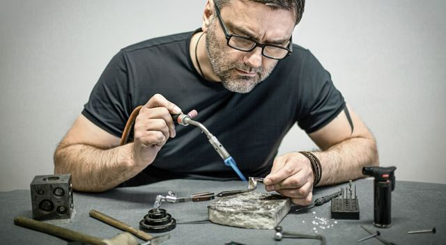

Konečnou cenu určí velikost kamenů a vaše přání. Cokoli dalšího vyrobím na zakázku, podle vašeho návrhu.
Ke každému šperku: dárkové balení, certifikát pravosti, servis (čištění, leštění, úpravy) a doživotní záruka.

Kdo prsten vyrobí
Zlatnickému řemeslu se věnuji přes 30 let. Pocházím z Jablonce nad Nisou, kde jsem v roce 1992 nastoupil do firmy Soliter a vypracoval se na mistra dílny litého šperku. Pak jsem 12 let vedl výrobu ve společnosti ALO Diamonds. Dnes pracuji sám, jen se zlatem a diamanty nebo jinými drahými kameny.
Vystavoval jsem na Svatebním Expu Praha 2021, 2022, 2024 a 2025. Pro soutěžící StarDance jsem vyrobil šperky na památku.
„Věřím v klidnou práci, poctivé řemeslo a šperky, které mají skutečný smysl.“
Co píšou klienti
5,0 z 56 recenzí na Googlu.
S panem Štekrem jsem byl naprosto spokojený. Vyrobil mi nádherný zásnubní prsten přesně podle mých představ a všech detailů, které jsem si přál. Oceňuji jeho vstřícný přístup, ochotu vše trpělivě konzultovat a vysokou kvalitu řemeslného zpracování.
Velkým překvapením byla také cena – ve srovnání s jinými známými prodejci byla výrazně příznivější, a přitom bez jakýchkoliv kompromisů v kvalitě. Navíc je obrovskou výhodou, že prsten vyrábí přímo na míru, takže jsou samozřejmostí i případné následné úpravy.
Pokud hledáte poctivého českého zlatníka, který vám vytvoří originální šperk podle vašich představ, pana Štekra mohu s čistým svědomím doporučit. Výsledek předčil moje očekávání.
Tomas, Google
Moje odpověď: Moc Vám děkuji za tato slova a důvěru, tohle se čte opravdu s velkou radostí a úsměvem. Jsem rád, že jsem pro Vás mohl vyrobit prsten pro tak výjimečný okamžik.
K panu Štekrovi jsem se dostal na doporučení a musím říct, že nemám co vytknout. Skvělý servis, jednání a pěkná práce. Když trochu člověk váhá, tak dokážou skvěle poradit.
Určitě se vrátím, až budeme řešit snubní prsteny!
Lukáš, Google
Po dlouhém hledání zlatníka, který by dokázal vytvořit zásnubní prsten na míru, jsem narazil na pana Štekra. Jeho přístup byl naprosto profesionální – všechny termíny dodržel přesně, a to i v náročném období svátků a Nového roku. Oceňuji také možnost upravovat jednotlivé návrhy podle představ.